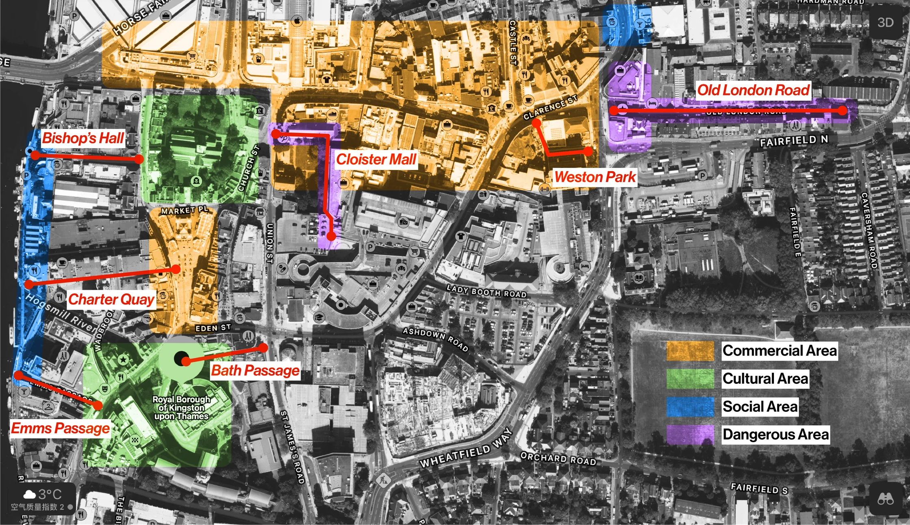
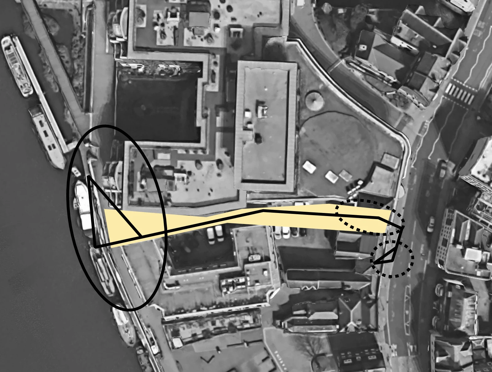
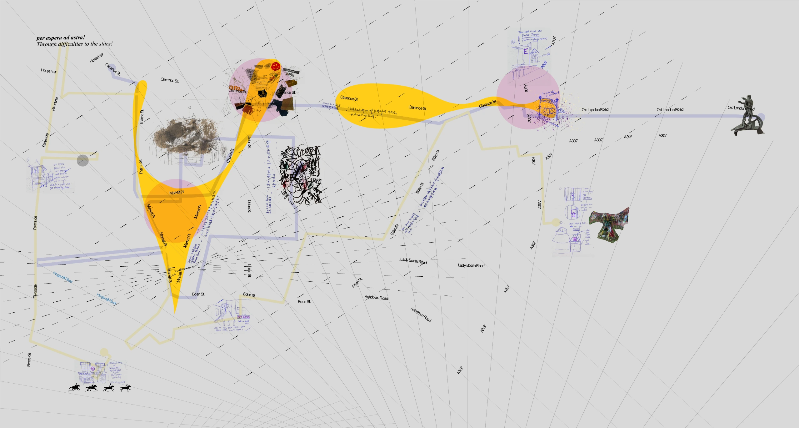

Find Your Way In：城市漫游与空间视觉化
以英国 Kingston 的心理地理漫游为起点，将商业主街之外被忽略的城市小路转化为几何符号系统、三维动态模型与交互地图。
这是一个以英国 Kingston 镇中心为场域的视觉与空间研究项目，探索建筑边界、人群流动与街道氛围之间的隐性联系。长期以来，Kingston 留给人们的印象被商业主街 Clarence St. 所主导，而许多承载历史记忆或连接不同街区的狭窄通道却在消费景观中被彻底忽略。通过两次无预设目的地的心理地理漫游，我结合实地摄影、感官速写、材质印记与公开轨迹数据，避开主商业轴线，筛选出六条容易被忽视的小路作为研究主体，并尝试用一套克制的视觉系统、声音叙事短片与交互地图原型，引导观众从日常行走的身体经验重新观察这些城市角落。
心理地理漫游与现场材质印记
在两次城市漫游中，我不仅用镜头记录街景，更尝试用场所自带的材质去捕捉主观体感——为充斥消费主义的商业主街拼贴外卖与包装垃圾，为饱经风霜的 All Saints 教堂涂抹真实灰烬，为夜间酒客徘徊的电话亭区泼洒红酒与威士忌，为幽暗的涂鸦通道覆上杂乱的粗马克笔痕迹。结合团队工作坊划分的「商业 / 文化 / 社交 / 危险」心理分区地图，我剔除了尺度与商业化程度过高的 Old London Road，最终锁定六条恰好串联起不同氛围区的隐蔽小路。

行人轨迹与空间符号图例
为了把主观感受转化为可横向比较的客观视觉语言，我引入 OpenStreetMap 上 Kingston 的公开行人活动轨迹数据，把人群停驻与聚集的密度作为空间吸引力的指标。以 Emms Passage 为例建立统一图例：浅黄色块勾勒道路真实轮廓，实线与虚线椭圆分别标示高/低吸引力节点，折线的高度对应吸引力强度、宽度对应停留时长。借助这套清晰的几何语法，六条小路的空间特征得以在同一套矩阵下被直观阅读。

Blender 几何节点构建三维空间
接着，我将二维符号推演至三维空间：在 Blender 中以几何节点把每条路的专属符号反复堆叠，建构成冷静、无机的蓝色建筑体量（深蓝代表强吸引，浅蓝代表弱吸引）；同时在建筑缝隙间填入红色融球（Metaballs）模拟热成像般有机流动的人群。建筑与人群边界处自然交融出的过渡色层，正是我对“不稳定、流动的街道氛围”的空间化表达。


心理地理地图、交互原型与声音叙事短片
最终交付由平面地图、交互原型与影像共同构成。在心理地理地图中，我刻意抹去了几乎所有常规建筑轮廓与导航标识，仅保留沿行走路线排布的街名与局部材质手记，让个人空间印象优先于功能导航；同时在 Adobe XD 中制作了嵌入模型动画的交互地图原型。在实验短片《Find Your Way In》里，我以高对比黑白街景为底衬托蓝红动态模型，并反过来用现场采集的环境音驱动空间叙事——例如让广场街头歌手的歌声逐渐减弱，借听觉距离把观众带离热闹市集，走入安静无人的河畔小道。

项目总结
《Find Your Way In》完成了一次从“身体漫游”到“数据抽象”再到“视听转译”的完整实验。它证明了城市空间不只是由钢筋和地图线条界定的静态容器，而是由行人的停留、绕行、气味与声景共同塑形的动态场域；而视觉系统与交互媒介的价值，正在于让这些日常行走中习以为常却难以言说的关系变得清晰可感。